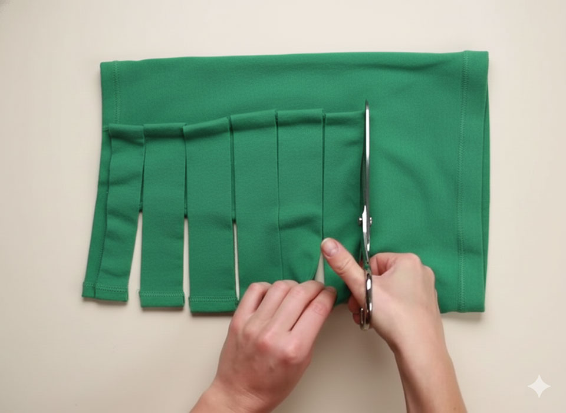
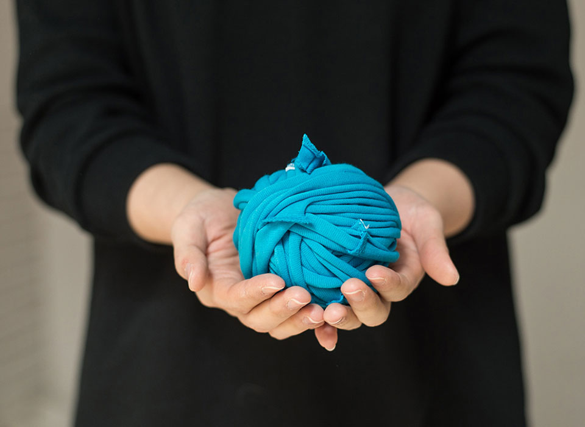
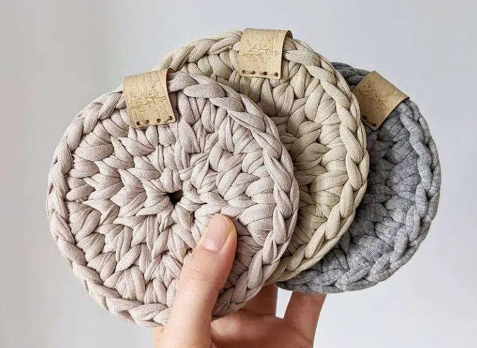
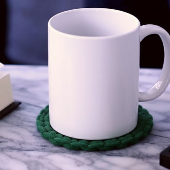

글. 편집실
참고. 국내 뜨개 커뮤니티 외 다수
버려질 뻔한 헌 티셔츠 한 장이 집 안을 따뜻하게 바꾸는 순간이 있다.
익숙한 물건에 새 생명을 불어넣는 작은 실험, 티 코스터 만들기는 누구나
부담 없이 도전할 수 있는 업사이클링 취미다.
오래된 옷에 남아 있는 사소한 추억, 부드러운 감촉까지 새로운 쓰임으로
탈바꿈하는 과정은 예상보다 신선한 즐거움을 선물한다. 특별한 기구나
재료 없이, 손끝의 정성만으로 만들어 내는 나만의 홈 카페 소품. 지금 이
순간, 가장 친근한 소재로 새로운 취향을 발견하는 경험을 시작해 보자.

티셔츠 한 장이면 충분하다. 입지 않는 티셔츠를 골라 바닥에 가로로 펼치고, 겨드랑이 바로 아래를 가로로 잘라 윗부분을 제거한다. 남은 천을 두 겹으로 접고, 바깥쪽에서 약 5cm 안쪽으로 다시 접어 마지막 부분까지 깔끔하게 맞춘다. 이제 접힌 천을 약 2.5cm 간격으로 세로로 길게 잘라 여러 조각의 띠 형태로 만든다. 띠를 하나씩 펼쳐 양 끝을 잡아당기면 고리 모양의 길쭉한 원단 실이 완성된다.

ⓒ소생공단길게 잘라 놓은 티셔츠 천을 원하는 만큼 이어서 하나의 긴 실처럼 만든다. 그 실을 세 가닥으로 나눠 머리카락처럼 땋아준다. 땋아낸 실을 바닥에 동그랗게 돌돌 말고, 겹치는 부분은 바느질로 튼튼하게 고정한다. 겹이 약간 어긋나거나 울퉁불퉁해도 괜찮다. 원래 소재의 질감과 손으로 만든 느낌이 오히려 더 개성을 살려준다.

ⓒArtesanato완성한 코스터는 머그잔, 냄비받침, 작은 화분 받침 등 다양하게 쓸 수 있다. 한 번의 도전만으로 나만의 홈 카페 분위기를 만들 수 있고, 오래된 옷의 소중한 추억도 새롭게 일상에 녹여낼 수 있다. 버려질 뻔한 옷이 멋진 소품으로 다시 태어나는 기쁨. 오늘은 작은 실천으로 나만의 취향을 발견해 보자.

<마음채움> 하반기호에서는 누구나 쉽게 따라 할 수 있는 티 코스터 도안 한 장을 드립니다. 아래 링크에서 다운받고 도안을 따라 만들어 집 안에 포인트를 더해보세요,
티 코스터 도안 다운받기